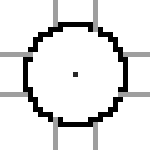
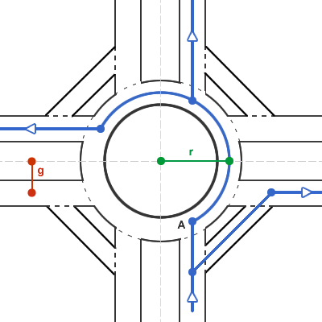
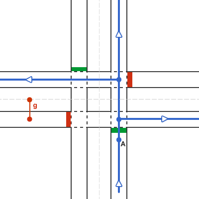

Microsimulation and Traffic Flow Analysis at Roundabouts and Traffic Lights
Jakub Jurových, Peter Sandtner, Obligatory Asian Dude
We use a cellular automaton model to simulate 3 types of intersections - (1) simple roundabout, (2) roundabout with quick right turn and (3) basic traffic lights.
We analyze the traffic flow dynamics of each intersections, finding bounds of their optimal use cases. We compare these traffic control systems in terms of their efficiency at usual traffic flow metrics such as average time spent in the intersection and intersection throughput.
The model consists of 2 perpendicular roads each with 2 lanes (totaling 4 directions), intersection control system and homogenous agents representing cars.
For this task we used NetLogo simulation software. Source code of our simulation is attached in the document.
Introduction
During the past few decades we have seen a wide adoption of alternative traffic control schemes, especially roundabouts.
Traffic management is becoming extremely complex due to overloaded communications and predicting the traffic flow cannot be considered reliable.
A need for flexibility has lead to innovative traffic control mechanisms.
With many possibilities in organization of vehicular traffic, it is important to understand basic principles of the intersections.
Despite the promising results of roundabout scheme, we still encounter mostly traffic lights, which are typical for dense urban areas.
We set out to explore a very limited amount of these two traffic control mechanisms in simplified conditions.
Our focus is solely on efficieny, not considering additional problems such as environmental impact or general safety.
The Problem
Traffic simulation can become highly complex, considering many factors such as acceleration, yield-of-way-rules and speed regulation.
A general objective of keeping the traffic flow on a highest level possible might be misleading.
Despite the symmetric nature of our targeted intersections, traffic flow from one direction can be effectively throttled by another road.
Our objective is to analyze several traffic situations of various traffic loads and determine the best control scheme under these conditions.
We try to understand the traffic flow limits of each of these situations.
The simulated world consists of a grid of 120x120 patches. Travelling distance from a patch to all is neighbours represents 1 meter in the real world (see fig. 1).
As a base for our computations, we consider the smallest discrete time interval (aka tick) to be 1 second in the real world.
Cars are homogenous agents, represented using NetLogo's turtles. Each turtle moves n patches over 1 second, where n is it's current speed.
Turtles are allowed to move only on road patches. Each road patch has a static variable priority used for determining the right-of-way rules.
Turtles are created on one of 4 spawn patches, each representing the one of the 4 possible inbound directions. Spawn patches can be considered as the input of the outside world.
Spawns are operated independently, using probabilistic function for creating new turtles. In one tick, at the most only 1 turtle is created on 1 spawn.
Probabilistic distribution ensures the random space and time gaps between 2 turtles coming from the same direction.
Random space gaps generated by the probabilistic function represent the Poisson distribution of space gaps found in the real world situations[1]. really? check the source
Movement of the Turtles
Upon the creation of the turtle, each one is assigned it's final direction using a uniform probabilistic function. Since some of our modeled control schemes do not allow U-turn (i.e. 180° change in car's direction), we disallow U-turns from all of our model situations.
Therefore our model assumes distribution of 33/33/33 % for left/straight/right turns.
The concept of turtle movement is based on a modified version of Nagel–Schreckenberg model[citation needed]. In this model we are not considering the random decrease of speed of turtles.
The outline of our movement model of the turtle can be represented in these steps, which occur on every tick $i$:
Acceleration: Velocity $v_{t}$ of each turtle $t$ is increased by the acceleration $a = 1$. This represents the acceleration of $1 m/s^2$ in the real world. This is close to the real-world $1.4 m/s^2$ acceleration observed in our road tests.
$v_{t}^{(i+1/2)} = v_{t}^{(i)} + a$
Using a constant acceleration $a$, our model assumes uniform acceleration of a car accross the whole speed range.
Slowdown and allocation: The velocity of the turtle is limited by:
maximal speed $vmax_r$ of road $r$
distance $d$ to the nearest obstacle (another turtle, field allocated by another turtle or stopping traffic light)
Maximum speed of the road is fixed $14 m/s$, representing $\sim 50\ km/h$ in the real world.
Due to the two-dimensional space (instead of just one-dimensional found in NS model) we need to introduce a process of patch allocation.
The allocation process may introduce nondeterministic behaviour in two-dimensional space. To achieve a deterministic behavior, we need to execute the slowdown and allocation in an ordered manner. Turtles in this process are partially ordered using the priority of their current patch, which can be either $1$ (executed later) or $2$ (executed sooner).

Black patches in our simulation represent high-priority road. Grey patches represent low-priority road.
Each turtle allocates fields on its own path.
In the allocation process, turtle deterministically chooses the next patch accroding to its final direction. Patch in this direction is preferred over other patches which are preferred over patch with the opposite direction.
Each turtle allocates at most $v_t^{i+1}*l$ patches.
Allocation factor $l$ ensures that turtle yields the right of way if the second turtle is less than $l$ seconds away. In our model we use constant allocation factor $l = 3$.
Speed variation: This step in the original NS model represents the random slowdown of certain turtles. This event is not considered in our model.
Movement: Each turtle is moved $v_t^(i+1)along its allocated path.
Intersections
Classic Roundabout
Classic roundabout
A first traffic control mechanism analyzed in our model is roundabout.
We compare roundabouts of various sizes, described by radius $r$ and lane gap $g = r/6$ illustrated in figure 2.
A turtle entering a roundabout randomly chooses it's exit according to the turtle's final direction.
Possible routes of a car coming from the south are illustrated in figure 2. Please note the missing U-turn option.
A car entering the roundabout yields the right of way when entering the roundabout at point A.
The roundabout patches has higher priority than road patches with speed limited to $8 m/s = 28.8 km/h$.
Maximum allowed speed of road patches outside the roundabout are limited is limited to $14 m/s = 50.4 km/h$.
Roundabout with quick right turn

Roundabout with quick right turn
Another modeled scheme is a Roundabout with a quick right turn. This is a variation of a Classic roundabout control scheme.
In this model, a car with an intent of right turn does not enter roundabout at all. Instead, it uses separate road to decrease the load of the roundabout.
Road metrics introduced in Classic roundabout also hold in this model. Radius of right turn $r_{outer}$ is 5 meters higher than roundabout radius $r_{inner}$.
$r_{outer} = r_{inner} + 5$
Traffic lights

Fixed interval traffic lights
We have chosen Traffic Lights with fixed interval to be the last modeled scheme in this project.
Car waits on point A in figure 3 until there is a green light for its direction.
Traffic lights interval consists of green-light length and orange-light length.
Our model suffers from deadlock of turtles under certain conditions (e.g. high traffic flow combined with long switch interval).
In our model, green lights lasts for 40 seconds and orange light for 10 seconds.
Lane gap is fixed on $g = 8$.
Maximum allowed speed on all patches is $14 m/s = 50.4 km/h$.
Analysis
Strategy 25/25/25/25
North:
East:
South:
West:
Strategy 40/10/40/10
North:
East:
South:
West:
Strategy 40/40/10/10
North:
East:
South:
West:
Strategy 40/30/20/10
North:
East:
South:
West:
Summary
While many optimizations are possible, they come at price of decreased flexibility. NetLogo's inexpressible syntax and lack of advanced data structures
Limits of the model and possible extensions
Modeling under realistic conditions can quickly become extremely complex.
We needed to simplify our model in such ways that diverge from the real world as little as possible while maintaning flexibility and performance of our models.
Even though traffic rules are complex and differ in some countries, they are mostly deterministic. Drivers, on the other hand, may act unpredictably and heterogenously under certain conditions.
A possibility of traffic accidents has not been considered in our model. In the real world, slightly less effective control scheme may result in more robust system, prone to the accidents and other unpredictable situations.
In the real world, control system may even be limited by the space. This might be the reason why in the dense urban environment with grid layout we see almost exclusively only traffic lights.
Another possible extension is to include pedestrians into our model. According to the 1994 before-and-after study conducted in Netherlands4, roundabouts result in 89% less pedestrian injuries. In roundabouts, greater safety is achieved through artificial obstacle, i.e. central island, effectively lowering speed of the vehicles5.
Other possible extensions include environmental impact, aesthetics and building costs.
Schoon, C., and J. van Minnen, "The Safety of Roundabouts in the Netherlands," SWOV Institute for Road Safety Research, Traffic Engineering and Control (March 1994).